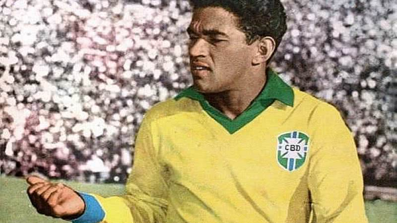

Nesta página, você conhecerá algumas das maiores lendas da Seleção Brasileira de Futebol. Estes jogadores não apenas brilharam em campo, mas também deixaram um legado duradouro na história do futebol brasileiro e mundial. Cada um deles contribuiu para as conquistas da seleção, tornando-se ícones que são lembrados até hoje.
Pelé
Considerado um dos maiores jogadores de todos os tempos, Pelé conquistou três Copas do Mundo (1958, 1962 e 1970).
Zico
Conhecido como o "Pelé Branco", Zico é um dos maiores ídolos do Flamengo e um dos melhores meio-campistas da história.
Ronaldo Fenômeno
Um dos atacantes mais letais da história, Ronaldo venceu duas Copas do Mundo (1994 e 2002) e deixou sua marca em clubes como Barcelona e Real Madrid.
Romário
Um dos melhores atacantes de sua geração, Romário foi fundamental na conquista da Copa do Mundo de 1994.
Cafu
O único jogador a ganhar duas Copas do Mundo como capitão (1994 e 2002), Cafu é uma lenda na posição de lateral direito.
Ronaldinho Gaúcho
Famoso por sua habilidade e alegria em campo, Ronaldinho foi campeão da Copa do Mundo de 2002 e se destacou em clubes como Barcelona.
Neymar
Um dos maiores talentos da atualidade, Neymar é conhecido por suas habilidades técnicas e já se tornou um dos artilheiros da seleção.
Garrincha
Considerado um dos dribladores mais incríveis da história, Garrincha foi fundamental nas vitórias da seleção nas Copas de 1958 e 1962.
Jairzinho
Um dos heróis da Copa do Mundo de 1970, Jairzinho foi o artilheiro da competição e um dos melhores jogadores de sua época.